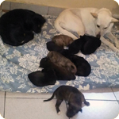

|  |
Rosita, Blanqui y Negrita:
Aurelia se encuentra preocupada ya que vive en un departamento pequeño, y, su amiga Rosi se escapó y quedó preñada en un descuido. Tuvo 11 hermosos cachorritos, de los cuales 2 lamentablemente fallecieron. Debido a su situación Aurelia necesita encontrarles lugar a estos pequeños.
Oremos porque encuentren un hogar que los colme de cuidado y amor lo antes posible.
|